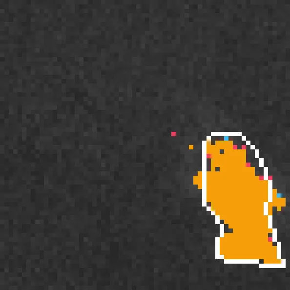
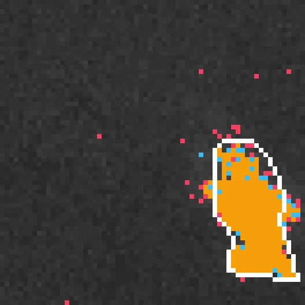
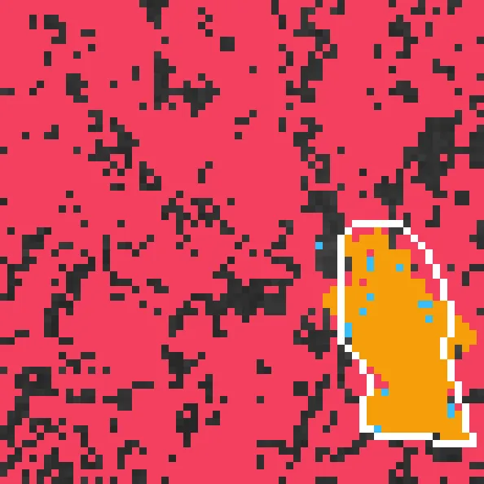
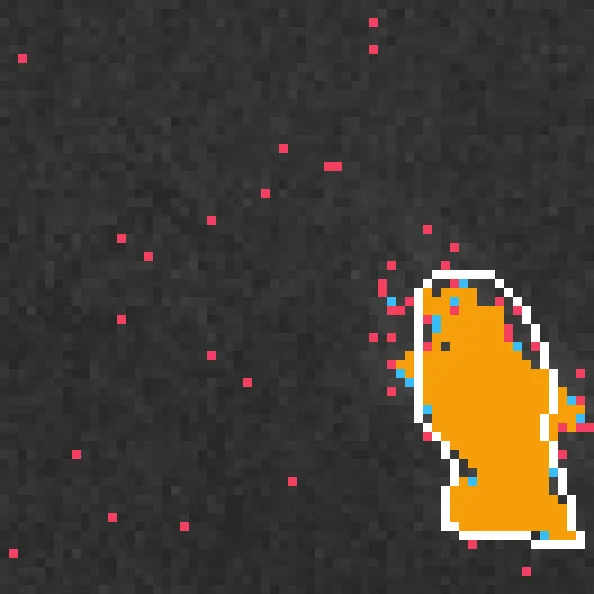
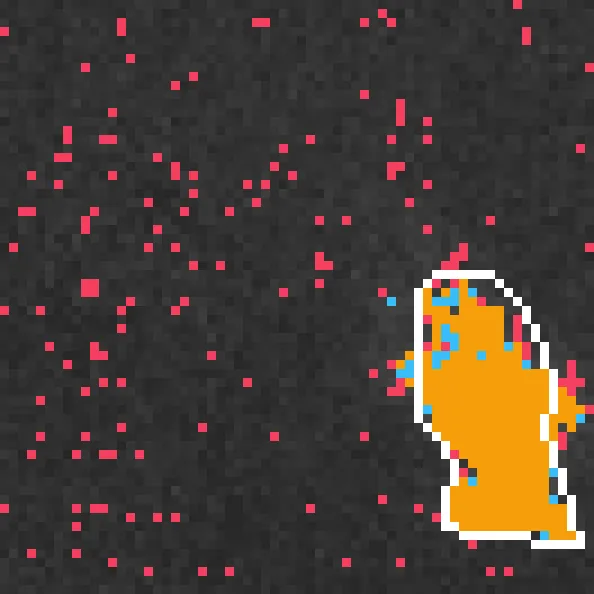
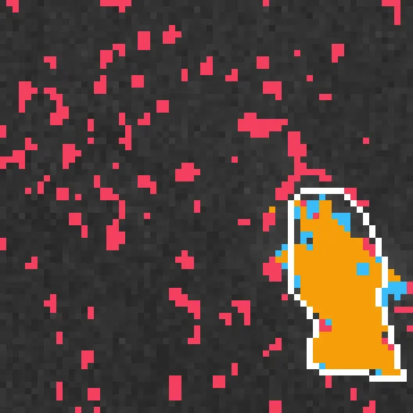
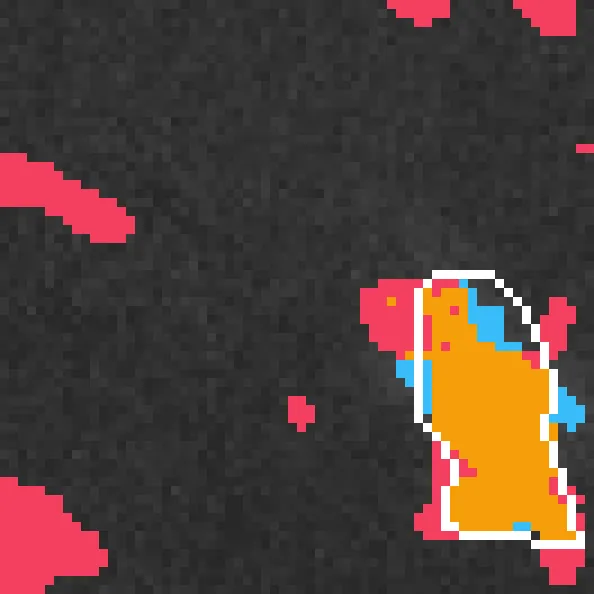

Benchmark / Use cases / Methane plumes / Results / methane-l89-00
methane-l89-00
Compression ratio and delta_iou
Each point is a bound on the root-mean-square error, written next to it in 10⁻⁴ of reflectance, on this sample.
GeoZL PIVCOGeoZL PFORJPEG XL
Decoded detections
The result on the compressed copy at each error bound, in 10⁻⁴ of reflectance.detected on bothlostnew
GeoZL PIVCO
RMSE ≤ 1 × 10⁻⁴, measured 0.981
2.8× · delta_iou -0.001
RMSE ≤ 2 × 10⁻⁴, measured 1.89
3.4× · delta_iou +0.014 RMSE ≤ 4 × 10⁻⁴, measured 3.91
RMSE ≤ 4 × 10⁻⁴, measured 3.91
4.4× · delta_iou -0.010
RMSE ≤ 8 × 10⁻⁴, measured 7.92
5.9× · delta_iou -0.046 RMSE ≤ 16 × 10⁻⁴, measured 15.9
RMSE ≤ 16 × 10⁻⁴, measured 15.9
8.7× · delta_iou -0.432 RMSE ≤ 32 × 10⁻⁴, measured 31.9
RMSE ≤ 32 × 10⁻⁴, measured 31.9
12.2× · delta_iou -0.586
RMSE ≤ 64 × 10⁻⁴, measured 60.3
18.2× · delta_iou -0.625 GeoZL PFOR
JPEG XL
 RMSE ≤ 1 × 10⁻⁴, lossless
RMSE ≤ 1 × 10⁻⁴, lossless
1.6× · delta_iou +0.000RMSE ≤ 2 × 10⁻⁴, lossless
1.6× · delta_iou +0.000 RMSE ≤ 4 × 10⁻⁴, lossless
RMSE ≤ 4 × 10⁻⁴, lossless
1.6× · delta_iou +0.000
RMSE ≤ 8 × 10⁻⁴, measured 7.82
4.3× · delta_iou -0.050
RMSE ≤ 16 × 10⁻⁴, measured 15.8
6.8× · delta_iou -0.185
RMSE ≤ 32 × 10⁻⁴, measured 31.8
20.5× · delta_iou -0.344
RMSE ≤ 64 × 10⁻⁴, measured 62.6
72.6× · delta_iou -0.292